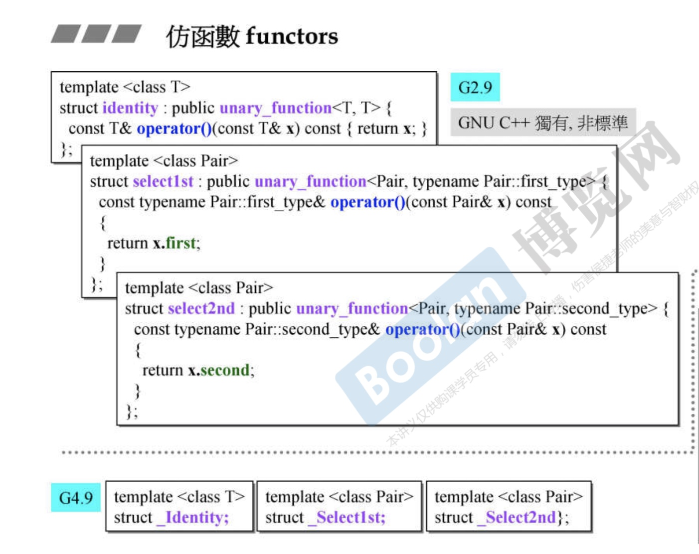
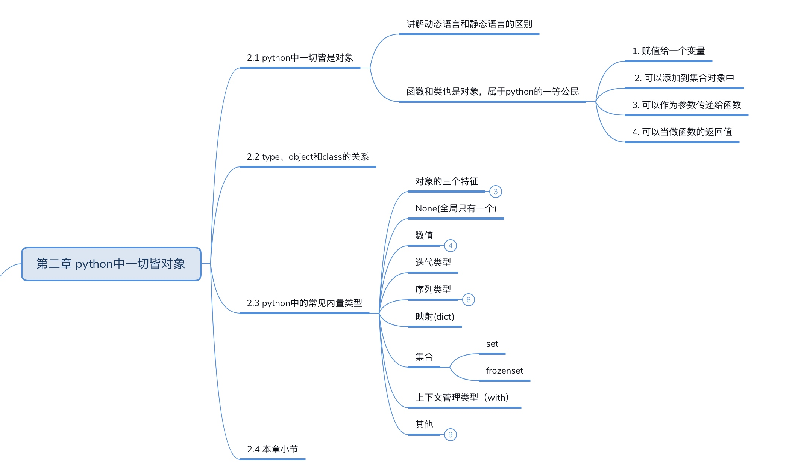

<!DOCTYPE HTML>
<html>
<head>
	<meta charset="utf-8">
	<title>  
	  
  	       凌云阁
  	
	</title>

  <meta name="HandheldFriendly" content="True">
  <meta name="MobileOptimized" content="320">
  <meta name="viewport" content="width=device-width, initial-scale=1">

	<link href="atom.xml" rel="alternate" title="       凌云阁" type="application/atom+xml">

	<link href="asset/stylesheets/screen.css" media="screen, projection" rel="stylesheet" type="text/css">
	<link href="asset/stylesheets/font-awesome.min.css" media="screen, projection" rel="stylesheet" type="text/css">
	<script src="asset/javascripts/jquery.min.js"></script>
	<script src="asset/highlightjs/highlight.pack.js"></script>
	<link href="asset/highlightjs/styles/solarized_dark.css" media="screen, projection" rel="stylesheet" type="text/css">
<script>hljs.initHighlightingOnLoad();</script>

	<!--[if lt IE 9]><script src="asset/javascripts/html5.js"></script><![endif]-->
	<!-- <link href='http://fonts.googleapis.com/css?family=Nunito:400,300,700' rel='stylesheet' type='text/css'> -->
	<style type="text/css">
/* latin */
@font-face {
  font-family: 'Nunito';
  font-style: normal;
  font-weight: 300;
  src: local('Nunito-Light'), url(asset/font/1TiHc9yag0wq3lDO9cw0voX0hVgzZQUfRDuZrPvH3D8.woff2) format('woff2');
  unicode-range: U+0000-00FF, U+0131, U+0152-0153, U+02C6, U+02DA, U+02DC, U+2000-206F, U+2074, U+20AC, U+2212, U+2215, U+E0FF, U+EFFD, U+F000;
}
/* latin */
@font-face {
  font-family: 'Nunito';
  font-style: normal;
  font-weight: 400;
  src: local('Nunito-Regular'), url(asset/font/6TbRXKWJjpj6V2v_WyRbMX-_kf6ByYO6CLYdB4HQE-Y.woff2) format('woff2');
  unicode-range: U+0000-00FF, U+0131, U+0152-0153, U+02C6, U+02DA, U+02DC, U+2000-206F, U+2074, U+20AC, U+2212, U+2215, U+E0FF, U+EFFD, U+F000;
}
/* latin */
@font-face {
  font-family: 'Nunito';
  font-style: normal;
  font-weight: 700;
  src: local('Nunito-Bold'), url(asset/font/TttUCfJ272GBgSKaOaD7KoX0hVgzZQUfRDuZrPvH3D8.woff2) format('woff2');
  unicode-range: U+0000-00FF, U+0131, U+0152-0153, U+02C6, U+02DA, U+02DC, U+2000-206F, U+2074, U+20AC, U+2212, U+2215, U+E0FF, U+EFFD, U+F000;
}
	</style>
	
	<style type="text/css">
	.container .left-col{ opacity: 1;}
	#pagenavi a{ font-size: 1.3em;}
	#pagenavi .next:before{ top: 3px;}
	#pagenavi .prev:before{ top: 3px;}
	.container .mid-col .mid-col-container #content .archives .title{ font-size: 1.5em;}
	.container .mid-col .mid-col-container #content article{ padding: 15px 0px;}
	#header .subtitle {
		line-height: 1.2em;
		padding-top: 8px;
	}
	article pre{ background: none; border: none; padding: 0;}
	article .entry-content{text-align: left;}
	.share-comment{ padding: 25px 0px; clear: both;}
	hr{ margin: 20px 0px;border: 0; border-top:solid 1px #ddd;}

	</style>
  

</head>


<body>
	<div class="container">
		<div class="left-col">
			<div class="intrude-less">
				<header id="header" class="inner">
				 
				 	<div class="profilepic">
						
					</div>
            	
					
					<h1><a href="index.html">       凌云阁</a></h1>
					<p class="subtitle">生命的意义是成为你自己！</p>
					<nav id="main-nav">
						<ul class="main">
						
						  <li id=""><a target="_self" href="index.html">Home</a></li>
						
						  <li id=""><a target="_self" href="archives.html">Archives</a></li>
						
						</ul>
					</nav>

					<nav id="sub-nav">
						<div class="social">

<a target="_blank" class="facebook" href="www.facebook.com" title="Facebook">Facebook</a>


<a target="_blank" class="weibo" href="www.weibo.com" title="weibo">Weibo</a>
<a target="_blank" class="twitter" target="_blank" href="www.twitter.com" title="Twitter">Twitter</a>
<a target="_blank" class="github" target="_blank" href="www.github.com/chawlau" title="GitHub">GitHub</a>


								

								<a class="rss" href="atom.xml" title="RSS">RSS</a>
							
						</div>
					</nav>
				</header>				
			</div>
		</div>	
		<div class="mid-col">
			<div class="mid-col-container"> <div id="content" class="inner">
<div itemscope itemtype="http://schema.org/Blog">


	<article class="post" itemprop="blogPost" itemscope itemtype="http://schema.org/BlogPosting">
		<div class="meta">
			<div class="date">
				<time datetime="2019-12-01T10:43:11+08:00" itemprop="datePublished">2019/12/01 10:43 上午</time>
			</div>
			<div class="tags">posted in 
			
			    <a class='category' href='%E8%AE%BE%E8%AE%A1%E6%A8%A1%E5%BC%8F%E4%B9%8B%E7%BE%8E.html'>设计模式之美</a>&nbsp;
			 
			</div>
		</div>
		<h1 class="title" itemprop="name"><a href="15751681913786.html" itemprop="url">
		封装和抽象和继承多态</a></h1>
		<div class="entry-content" itemprop="articleBody">
			
			<h4><a id="%E7%BB%A7%E6%89%BF%E7%9A%84%E4%BD%9C%E7%94%A8" class="anchor" aria-hidden="true"><span class="octicon octicon-link"></span></a>继承的作用</h4>
<ul>
<li>继承最大的一个好处就是代码复用。假如两个类有一些相同的属性和方法，我们就可以将这些相同的部分，抽取到父类中，让两个子类继承父类。这样，两个子类就可以重用父类中的代码，避免代码重复写多遍。不过，这一点也并不是继承所独有的，我们也可以通过其他方式来解决这个代码复用的问题，比如利用组合关系而不是继承关系</li>
</ul>
<h4><a id="%E6%8E%A5%E5%8F%A3%E5%92%8C%E6%8A%BD%E8%B1%A1%E7%B1%BB" class="anchor" aria-hidden="true"><span class="octicon octicon-link"></span></a>接口和抽象类</h4>
<ul>
<li>抽象类更多的是为了代码复用，而接口就更侧重于解耦。接口是对行为的一种抽象，相当于一组协议或者契约</li>
</ul>
<h4><a id="%E6%8A%BD%E8%B1%A1%E6%A8%A1%E6%8B%9F%E6%8E%A5%E5%8F%A3" class="anchor" aria-hidden="true"><span class="octicon octicon-link"></span></a>抽象模拟接口</h4>
<pre><code class="language-C++">class Strategy { // 用抽象类模拟接口
  public:
    ~Strategy();
    virtual void algorithm()=0;
  protected:
    Strategy();
};
</code></pre>
<ul>
<li>抽象类 Strategy 没有定义任何属性，并且所有的方法都声明为 virtual 类型（等同于 Java 中的 abstract 关键字），这样，所有的方法都不能有代码实现，并且所有继承这个抽象类的子类，都要实现这些方法。从语法特性上来看，这个抽象类就相当于一个接口。</li>
</ul>
<h4><a id="%E6%8A%BD%E8%B1%A1%E7%B1%BB%E5%92%8C%E6%8E%A5%E5%8F%A3" class="anchor" aria-hidden="true"><span class="octicon octicon-link"></span></a>抽象类和接口</h4>
<ul>
<li>判断的标准很简单。如果我们要表示一种 is-a 的关系，并且是为了解决代码复用的问题，我们就用抽象类；如果我们要表示一种 has-a 关系，并且是为了解决抽象而非代码复用的问题，那我们就可以使用接口</li>
</ul>
<h4><a id="%E9%99%84%E4%BB%B6%E4%B8%8A%E4%BC%A0%E6%9C%8D%E5%8A%A1%E5%99%A8%E5%AE%9E%E7%8E%B0" class="anchor" aria-hidden="true"><span class="octicon octicon-link"></span></a>附件上传服务器实现</h4>
<ul>
<li>需求：支持上传、下载、删除以及文件的存储，存储的话需要支持存本地和云端，涉及附件上传的业务点有十几个。</li>
<li>设计思路：</li>
<li>接口设计：上传、下载、删除是公共行为，抽象到接口中</li>
<li>2、存储方法是一大块公共代码，写到抽象类里面</li>
<li>3、每个业务的附件上传子类实现接口、继承抽象类</li>
</ul>
<h4><a id="%E6%8E%A5%E5%8F%A3%E5%B1%9E%E6%80%A7" class="anchor" aria-hidden="true"><span class="octicon octicon-link"></span></a>接口属性</h4>
<ul>
<li>接口不能包含属性（也就是成员变量）。接口只能声明方法，方法不能包含代码实现。类实现接口的时候，必须实现接口中声明的所有方法。</li>
</ul>
<pre><code class="language-C++">#include &lt;iostream&gt;
#include &lt;list&gt;

class RpcReq {
public:
    RpcReq() {}
};

class Filter {
public:
    virtual void doFilter(RpcReq req) = 0;
};

class AuthencationFilter : public Filter {
public:
    void doFilter(RpcReq req) { std::cout &lt;&lt; &quot;AuthencationFilter&quot; &lt;&lt; std::endl;}
};

class RateLimitFilter : public Filter {
public:
    void doFilter(RpcReq req) { std::cout &lt;&lt; &quot;RateLimitFilter&quot; &lt;&lt; std::endl; }
};

class Application {
private:
    std::list&lt;Filter*&gt; filters;

public:
    void handleRequest(RpcReq req) {
        for (auto filter : filters) {
            filter-&gt;doFilter(req);
        }
    }

    void AddFilter(Filter* filter) {
        filters.push_back(filter);
    }
};

int main() {
    Application* app = new Application();
    app-&gt;AddFilter(new AuthencationFilter());
    app-&gt;AddFilter(new RateLimitFilter());
    RpcReq req;
    app-&gt;handleRequest(req);
}
</code></pre>
<h4><a id="%E6%97%A5%E5%BF%97" class="anchor" aria-hidden="true"><span class="octicon octicon-link"></span></a>日志</h4>
<pre><code class="language-C++">//
// Created by 刘超 on 2019-12-01.
//

#include &lt;iostream&gt;

using namespace std;

class Level {
private:
    int value_;
public:
    Level(int val = 2) : value_(val) {}

    int intValue() {
        return value_;
    }
};

class Logger {
public:
    string _name;
    bool _enabled;
    Level *_minLevel;
public:
    Logger(string name, bool enabled, Level *minLevel) : _name(name),
                                                         _enabled(enabled),
                                                         _minLevel(minLevel) {
    }

    void log(string message) {
        if (!isLoggable()) return;
        doLog(message);
    }

    virtual void doLog(string message) = 0;

protected:
    bool isLoggable() {
        return _enabled &amp;&amp; (_minLevel-&gt;intValue() &lt;= 3);
    }
};

class Writer {
public:
    void write(string msg) {
        std::cout &lt;&lt; msg &lt;&lt; std::endl;
    }
};

class FileLogger : public Logger {
private:
    Writer *fileWriter;
public:
    FileLogger(string name, bool enabled, Level *minLevel)
            : Logger(name, enabled, minLevel), fileWriter(new Writer()) {
    }

    void doLog(string message) {
        fileWriter-&gt;write(message);
    }
};

class MessageQueueClient {
public:
    void send(string msg) {
        std::cout &lt;&lt; msg &lt;&lt; std::endl;
    }
};

class MessageQueueLogger : public Logger {
private:
    MessageQueueClient *_client;
public:
    MessageQueueLogger(string name, bool enabled, Level *minLevel)
            : Logger(name, enabled, minLevel),
              _client(new MessageQueueClient()) {
    }

    void doLog(string message) {
        _client-&gt;send(message);
    }
};

int main() {
    Logger* fileLog = new FileLogger(&quot;file&quot;, true, new Level());
    Logger* mqLog
            = new MessageQueueLogger(&quot;kafka&quot;, true, new Level());
    fileLog-&gt;doLog(&quot;file logger&quot;);
    mqLog-&gt;doLog(&quot;kafka mq logger&quot;);
}
</code></pre>


			
			
		</div>

	</article>
 
	<article class="post" itemprop="blogPost" itemscope itemtype="http://schema.org/BlogPosting">
		<div class="meta">
			<div class="date">
				<time datetime="2019-11-24T04:51:36+08:00" itemprop="datePublished">2019/11/24 04:51 上午</time>
			</div>
			<div class="tags">posted in 
			
			    <a class='category' href='Python.html'>Python</a>&nbsp;
			 
			</div>
		</div>
		<h1 class="title" itemprop="name"><a href="15745422969850.html" itemprop="url">
		自定义序列类</a></h1>
		<div class="entry-content" itemprop="articleBody">
			
			<h4><a id="%E5%BA%8F%E5%88%97%E5%8D%8F%E8%AE%AE" class="anchor" aria-hidden="true"><span class="octicon octicon-link"></span></a>序列协议</h4>
<ul>
<li></li>
</ul>
<h4><a id="add" class="anchor" aria-hidden="true"><span class="octicon octicon-link"></span></a>add</h4>
<pre><code class="language-python">a += (3, 4)
a += [3, 4]
通过魔法函数__iadd__来实现，内部通过extends实现
a = [1, 2]
c = a + [3, 4]
print(c)

a += (3, 4)
a.extend(range(3))//迭代相加每个元素
a.append((1, 2)) //直接加上整个元组
a.append([1, 2]) //直接加上整个列表
print(a)
</code></pre>
<h4><a id="%E5%8F%AF%E5%88%87%E7%89%87%E7%9A%84%E5%AF%B9%E8%B1%A1" class="anchor" aria-hidden="true"><span class="octicon octicon-link"></span></a>可切片的对象</h4>
<pre><code class="language-python">import numbers

class Group:
    def __init__(self, group_name, company_name, staffs):
        self.group_name = group_name
        self.company_name = company_name
        self.staffs = staffs

    def __reversed__(self):
        self.staffs.reverse()

    def __getitem__(self, item):
        cls = type(self)
        if isinstance(item, slice):
            return cls(group_name=self.group_name, company_name=self.company_name, staffs=self.staffs[item])
        elif isinstance(item, slice):
            return cls(group_name=self.group_name, company_name=self.company_name, staffs=[self.staffs[item]])

    def __len__(self):
        return len(self.staffs)

    def __iter__(self):
        return iter(self.staffs)

    def __contains__(self, item):
        if item in self.staffs:
            return True
        else:
            return False

staffs = [&quot;bobby1&quot;, &quot;imooc&quot;, &quot;bobby2&quot;, &quot;bobby3&quot;]

group = Group(company_name=&quot;imooc&quot;, group_name=&quot;user&quot;, staffs=staffs)
reversed(group)

for user in group:
    print(user)
</code></pre>
<h4><a id="%E7%BB%B4%E6%8C%81%E5%8D%87%E5%BA%8F%E6%8E%92%E5%88%97" class="anchor" aria-hidden="true"><span class="octicon octicon-link"></span></a>维持升序排列</h4>
<pre><code class="language-python">#用来处理已排序的序列，用来维持已排序的序列， 升序
import bisect

from  collections import deque

inter_list = deque()
bisect.insort(inter_list, 3)
bisect.insort(inter_list, 2)
bisect.insort(inter_list, 5)
bisect.insort(inter_list, 1)
bisect.insort(inter_list, 6)

print(bisect.bisect_left(inter_list, 3))

print(inter_list)
</code></pre>


			
			
		</div>

	</article>
 
	<article class="post" itemprop="blogPost" itemscope itemtype="http://schema.org/BlogPosting">
		<div class="meta">
			<div class="date">
				<time datetime="2019-10-29T07:40:36+08:00" itemprop="datePublished">2019/10/29 07:40 上午</time>
			</div>
			<div class="tags">posted in 
			
			    <a class='category' href='%E5%80%99%E6%8D%B7STL.html'>候捷STL</a>&nbsp;
			 
			</div>
		</div>
		<h1 class="title" itemprop="name"><a href="15723060364617.html" itemprop="url">
		仿函数</a></h1>
		<div class="entry-content" itemprop="articleBody">
			
			<h4><a id="%E7%AE%97%E6%9C%AF%E8%BF%90%E7%AE%97%E5%92%8C%E9%80%BB%E8%BE%91%E8%BF%90%E7%AE%97" class="anchor" aria-hidden="true"><span class="octicon octicon-link"></span></a>算术运算和逻辑运算</h4>
<ul>
<li></li>
<li></li>
</ul>
<h4><a id="%E8%9E%8D%E5%85%A5stl%E6%9D%A1%E4%BB%B6" class="anchor" aria-hidden="true"><span class="octicon octicon-link"></span></a>融入STL条件</h4>
<ul>
<li></li>
<li>继承binary_function&lt;T, T, bool&gt;</li>
<li></li>
<li>unary_function 一个操作数 如果作为父类，有人继承的话，大小是零</li>
<li>binary_function 两个操作数 1个字节</li>
<li></li>
</ul>


			
			
		</div>

	</article>
 
	<article class="post" itemprop="blogPost" itemscope itemtype="http://schema.org/BlogPosting">
		<div class="meta">
			<div class="date">
				<time datetime="2019-11-17T06:17:37+08:00" itemprop="datePublished">2019/11/17 06:17 上午</time>
			</div>
			<div class="tags">posted in 
			
			    <a class='category' href='Python.html'>Python</a>&nbsp;
			 
			</div>
		</div>
		<h1 class="title" itemprop="name"><a href="15739426575118.html" itemprop="url">
		抽象基类</a></h1>
		<div class="entry-content" itemprop="articleBody">
			
			<h4><a id="%E4%BD%9C%E7%94%A8" class="anchor" aria-hidden="true"><span class="octicon octicon-link"></span></a>作用</h4>
<ul>
<li>类型判断</li>
<li>接口实现</li>
</ul>
<h4><a id="%E7%B1%BB%E5%AF%B9%E8%B1%A1%E6%95%B0%E7%BB%84" class="anchor" aria-hidden="true"><span class="octicon octicon-link"></span></a>类对象数组</h4>
<pre><code class="language-python">class Cat(object):
    def say(self):
        print(&quot;i am a cat&quot;)


class Dog(object):
    def say(self):
        print(&quot;i am a dog&quot;)


class Duck(object):
    def say(self):
        print(&quot;i am a duck&quot;)


anaimal_list = [Cat, Dog, Duck]
for anaimal in anaimal_list:
    anaimal().say()
</code></pre>
<h4><a id="%E6%89%A9%E5%B1%95%E7%B1%BB" class="anchor" aria-hidden="true"><span class="octicon octicon-link"></span></a>扩展类</h4>
<ul>
<li>只要继承了魔法函数getitem就可以</li>
</ul>
<pre><code class="language-python">class Company(object):
    def __init__(self, employee_list):
        self.employee = employee_list

    def __getitem__(self, item):
        return self.employee[item]

    def __len__(self):
        return len(self.employee)


com = Company(['tom', 'jack', 'jsdon'])
a = ['b1', 'b2']
b = ['b2', 'b3']
name_tuple = ['b3', 'b4']
name_set = set()
name_set.add('b5')
name_set.add('b6')
a.extend(com)
print(a)
</code></pre>
<h4><a id="%E5%BC%BA%E5%88%B6%E5%AD%90%E7%B1%BB%E5%BF%85%E9%A1%BB%E5%AE%9E%E7%8E%B0%E6%8E%A5%E5%8F%A3" class="anchor" aria-hidden="true"><span class="octicon octicon-link"></span></a>强制子类必须实现接口</h4>
<pre><code class="language-python">class CacheBase(metaclass=abc.ABCMeta):
    @abc.abstractmethod
    def get(self, key):
        pass

    @abc.abstractmethod
    def set(self, key, value):
        pass

class RedisCache(CacheBase):
    def set(self, key, value):
        print(&quot;hello&quot;)

    def get(self, key):
        print('hello')
</code></pre>
<h4><a id="instance-type" class="anchor" aria-hidden="true"><span class="octicon octicon-link"></span></a>instance&amp;type</h4>
<ul>
<li>is是判断类别</li>
<li>==是判断值</li>
</ul>
<pre><code class="language-python">class A:
    pass

class B(A):
    pass

b = B()

print(isinstance(b, B))
print(isinstance(b, A))

print(type(b) is B)
print(type(b) is A) #二者的ID不想等
print(id(b))
print(id(B))
</code></pre>
<h4><a id="mro%E7%AE%97%E6%B3%95" class="anchor" aria-hidden="true"><span class="octicon octicon-link"></span></a>Mro算法</h4>
<ul>
<li></li>
<li>C3算法</li>
</ul>


			
			
		</div>

	</article>
 
	<article class="post" itemprop="blogPost" itemscope itemtype="http://schema.org/BlogPosting">
		<div class="meta">
			<div class="date">
				<time datetime="2019-11-16T10:45:54+08:00" itemprop="datePublished">2019/11/16 10:45 上午</time>
			</div>
			<div class="tags">posted in 
			
			    <a class='category' href='Python.html'>Python</a>&nbsp;
			 
			</div>
		</div>
		<h1 class="title" itemprop="name"><a href="15738723543218.html" itemprop="url">
		魔法函数</a></h1>
		<div class="entry-content" itemprop="articleBody">
			
			<h4><a id="%E6%A6%82%E5%BF%B5" class="anchor" aria-hidden="true"><span class="octicon octicon-link"></span></a>概念</h4>
<ul>
<li>python内置</li>
</ul>
<pre><code class="language-python">class Company(object):
    def __init__(self, employee_list):
       self.employee = employee_list

    def __getitem__(self, item):
        return self.employee[item]

company = Company(['tom', 'jack', 'jsdon'])

for em in company:
    print(em)
</code></pre>
<h4><a id="python%E6%95%B0%E6%8D%AE%E6%A8%A1%E5%9E%8B" class="anchor" aria-hidden="true"><span class="octicon octicon-link"></span></a>python数据模型</h4>
<pre><code class="language-python">class Company(object):
    def __init__(self, employee_list):
       self.employee = employee_list

    def __getitem__(self, item):
        return self.employee[item]

    def __len__(self):
        return len(self.employee)

company = Company(['tom', 'jack', 'jsdon'])

# company1 = company[:2]
# for em in company1:
#     print(em)

print(len(company))
</code></pre>
<h4><a id="%E9%AD%94%E6%B3%95%E5%87%BD%E6%95%B0" class="anchor" aria-hidden="true"><span class="octicon octicon-link"></span></a>魔法函数</h4>
<ul>
<li></li>
</ul>
<pre><code class="language-python">__subclasshook__ 魔法函数
</code></pre>


			
			
		</div>

	</article>
 
	<article class="post" itemprop="blogPost" itemscope itemtype="http://schema.org/BlogPosting">
		<div class="meta">
			<div class="date">
				<time datetime="2019-11-16T10:36:35+08:00" itemprop="datePublished">2019/11/16 10:36 上午</time>
			</div>
			<div class="tags">posted in 
			
			    <a class='category' href='Python.html'>Python</a>&nbsp;
			 
			</div>
		</div>
		<h1 class="title" itemprop="name"><a href="15738717951389.html" itemprop="url">
		with上下文管理器</a></h1>
		<div class="entry-content" itemprop="articleBody">
			
			<h4><a id="%E5%9F%BA%E4%BA%8E%E7%B1%BB%E7%9A%84%E4%B8%8A%E4%B8%8B%E6%96%87%E7%AE%A1%E7%90%86%E5%99%A8" class="anchor" aria-hidden="true"><span class="octicon octicon-link"></span></a>基于类的上下文管理器</h4>
<pre><code class="language-python">class FileManager:
    def __init__(self, name, mode):
        print('calling __init method')
        self.name = name
        self.mode = mode
        self.file = None

    def __enter__(self):
        print('calling __enter__ method')
        self.file = open(self.name, self.mode)
        return self.file

    def __exit__(self, exc_type, exc_val, exc_tb):
        print('calling __exit__ method')
        if self.file:
            self.file.close()
</code></pre>
<h4><a id="%E5%9F%BA%E4%BA%8E%E7%94%9F%E6%88%90%E5%99%A8%E7%9A%84%E4%B8%8A%E4%B8%8B%E6%96%87%E7%AE%A1%E7%90%86%E5%99%A8" class="anchor" aria-hidden="true"><span class="octicon octicon-link"></span></a>基于生成器的上下文管理器</h4>
<pre><code class="language-python">
from contextlib import contextmanager

@contextmanager
def file_manager(name, mode):
    try:
        f = open(name, mode)
        yield f
    finally:
        f.close()
        
with file_manager('test.txt', 'w') as f:
    f.write('hello world')
</code></pre>


			
			
		</div>

	</article>
 
	<article class="post" itemprop="blogPost" itemscope itemtype="http://schema.org/BlogPosting">
		<div class="meta">
			<div class="date">
				<time datetime="2019-11-15T08:10:04+08:00" itemprop="datePublished">2019/11/15 08:10 上午</time>
			</div>
			<div class="tags">posted in 
			
			    <a class='category' href='Python.html'>Python</a>&nbsp;
			 
			</div>
		</div>
		<h1 class="title" itemprop="name"><a href="15737766048515.html" itemprop="url">
		assert</a></h1>
		<div class="entry-content" itemprop="articleBody">
			
			<h4><a id="%E6%96%AD%E8%A8%80" class="anchor" aria-hidden="true"><span class="octicon octicon-link"></span></a>断言</h4>
<ul>
<li>不带括号</li>
<li>assert 时，一定不要加上括号，否则无论表达式对与错，assert 检查永远不会 fail。另外，程序中的 assert 语句，可以通过-O等选项被全局 disable</li>
</ul>
<pre><code class="language-python">def apply_discount(price, discount):
    update_price = price * (1- discount)
    assert  0 &lt;= update_price &lt;= price, 'price should be greater or equal to  0'
    return update_price

print('ret {}'.format(apply_discount(100, 0.2)))
apply_discount(100, 2)
</code></pre>
<h4><a id="" class="anchor" aria-hidden="true"><span class="octicon octicon-link"></span></a></h4>


			
			
		</div>

	</article>
 
	<article class="post" itemprop="blogPost" itemscope itemtype="http://schema.org/BlogPosting">
		<div class="meta">
			<div class="date">
				<time datetime="2019-11-12T06:21:54+08:00" itemprop="datePublished">2019/11/12 06:21 上午</time>
			</div>
			<div class="tags">posted in 
			
			    <a class='category' href='Python.html'>Python</a>&nbsp;
			 
			</div>
		</div>
		<h1 class="title" itemprop="name"><a href="15735109140523.html" itemprop="url">
		python对象</a></h1>
		<div class="entry-content" itemprop="articleBody">
			
			<h4><a id="%E7%BB%93%E6%9E%84%E5%9B%BE" class="anchor" aria-hidden="true"><span class="octicon octicon-link"></span></a>结构图</h4>
<ul>
<li></li>
</ul>
<h4><a id="type-object-class%E5%85%B3%E7%B3%BB" class="anchor" aria-hidden="true"><span class="octicon octicon-link"></span></a>type&amp;object&amp;class关系</h4>
<pre><code class="language-python">type-&gt;int-&gt;1
type-&gt;class-&gt;obj
a = 1
type(int)
</code></pre>
<ul>
<li>object最顶层基类</li>
<li>type是一个类，也是一个对象</li>
</ul>
<h4><a id="%E7%BB%93%E6%9E%84%E5%85%B3%E7%B3%BB%E5%9B%BE" class="anchor" aria-hidden="true"><span class="octicon octicon-link"></span></a>结构关系图</h4>
<ul>
<li></li>
</ul>
<h4><a id="%E5%AF%B9%E8%B1%A1%E4%B8%89%E4%B8%AA%E7%89%B9%E5%BE%81" class="anchor" aria-hidden="true"><span class="octicon octicon-link"></span></a>对象三个特征</h4>
<ul>
<li>身份</li>
<li>值</li>
<li>类型</li>
</ul>
<h4><a id="%E5%86%85%E7%BD%AE%E7%B1%BB%E5%9E%8B" class="anchor" aria-hidden="true"><span class="octicon octicon-link"></span></a>内置类型</h4>
<ul>
<li></li>
<li>None</li>
<li></li>
</ul>


			
			
		</div>

	</article>
 
	<article class="post" itemprop="blogPost" itemscope itemtype="http://schema.org/BlogPosting">
		<div class="meta">
			<div class="date">
				<time datetime="2019-11-13T06:53:48+08:00" itemprop="datePublished">2019/11/13 06:53 上午</time>
			</div>
			<div class="tags">posted in 
			
			    <a class='category' href='Python.html'>Python</a>&nbsp;
			 
			</div>
		</div>
		<h1 class="title" itemprop="name"><a href="15735992285022.html" itemprop="url">
		元组和列表</a></h1>
		<div class="entry-content" itemprop="articleBody">
			
			<h4><a id="%E5%86%85%E9%83%A8%E5%AE%9E%E7%8E%B0" class="anchor" aria-hidden="true"><span class="octicon octicon-link"></span></a>内部实现</h4>
<pre><code class="language-C">#ifndef Py_LIMITED_API
typedef struct {
    PyObject_VAR_HEAD
    PyObject **ob_item;
    Py_ssize_t allocated;
} PyListObject;
typedef struct {
    PyObject_VAR_HEAD
    PyObject *ob_item[1];
} PyTupleObject;
</code></pre>
<h4><a id="hash%E8%A1%A8" class="anchor" aria-hidden="true"><span class="octicon octicon-link"></span></a>hash表</h4>
<pre><code class="language-C">Indices
----------------------------------------------------
None | index | None | None | index | None | index ...
----------------------------------------------------
Entries
--------------------
hash0   key0  value0
---------------------
hash1   key1  value1
---------------------
hash2   key2  value2
---------------------
        ...
---------------------

</code></pre>
<ul>
<li>旧的Hash表越来越稀疏</li>
</ul>
<h4><a id="%E5%85%A8%E5%B1%80%E5%8F%98%E9%87%8F%E4%BF%AE%E6%94%B9" class="anchor" aria-hidden="true"><span class="octicon octicon-link"></span></a>全局变量修改</h4>
<pre><code class="language-python">x = [1]

def func2():
    x.append(2)
func2()
print(x)
</code></pre>


			
			
		</div>

	</article>
  

</div>
<nav id="pagenavi">
	 <a class="prev" href="all_35.html">Prev</a>  
	 <a class="next" href="all_37.html">Next</a> 
	<div class="center"><a href="archives.html">Blog Archives</a></div>

</nav>

</div>


        </div>
			<footer id="footer" class="inner">Copyright &copy; 2014
Powered by <a target="_blank" href="http://www.mweb.im">MWeb</a> &nbsp;&nbsp; 
Theme by <a href="http://shashankmehta.in/archive/2012/greyshade.html">Shashank Mehta</a>
      </footer>
		</div>
	</div>

  
    


</body>
</html>